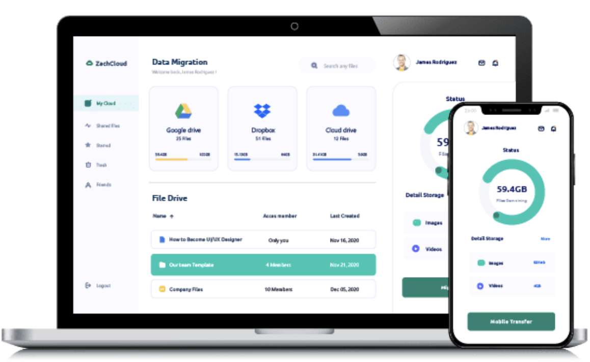
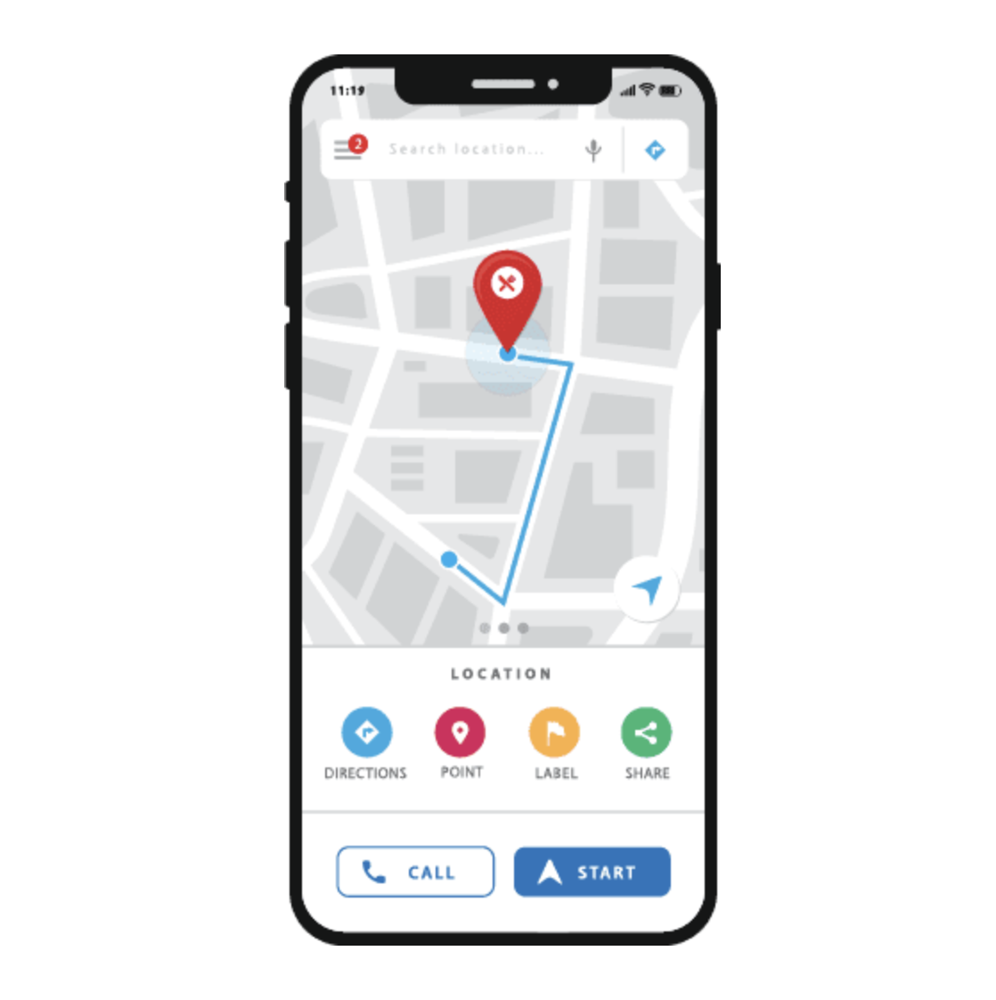
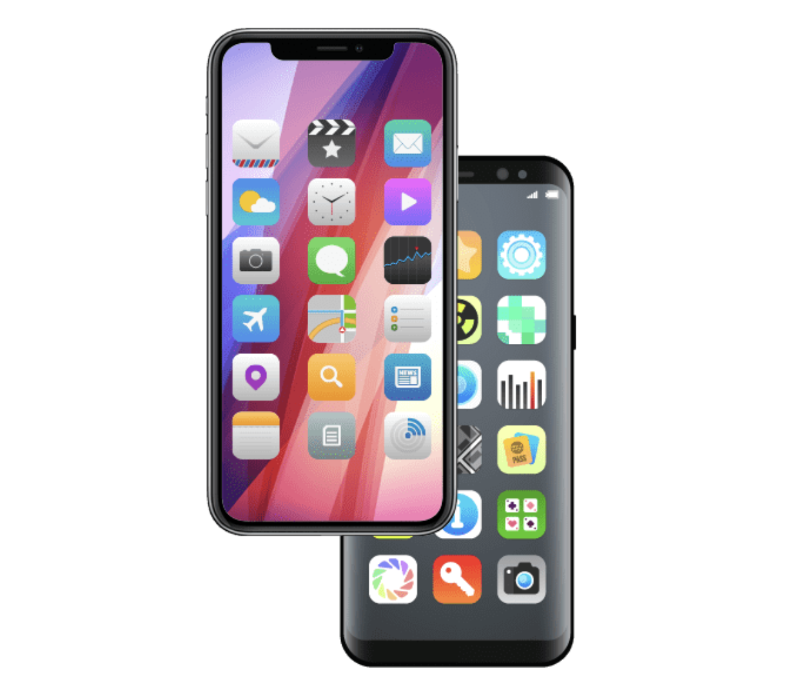

Servicios de Desarrollo y Soporte de Software para su Negocio
Nuestro equipo de programadores de aplicaciones puede crear aplicaciones excepcionales para una amplia gama de dispositivos, incluidos computadoras de escritorio, dispositivos móviles y tabletas. Con la ayuda de nuestra experiencia en la industria, podemos brindar al usuario la mejor experiencia de aplicación a través de múltiples canales.
Servicios de desarrollo de software personalizado
En +593Freelance desarrollamos software y aplicaciones de clase mundial para startups, pequeñas y medianas empresas (PYMES), y grandes corporaciones.
- Desarrollo Web Personalizado: Nuestras soluciones de desarrollo web facilitan los flujos de trabajo, aumentan los ingresos y optimizan las operaciones comerciales.
- Implementación y Despliegue: Diseñamos un plan de implementación y despliegue de software a profundidad, evaluando las necesidades de su empresa, para así brindar tecnologías mejoradas a los usuarios finales.
- Desarrollo de Aplicaciones Personalizadas: Confiamos en nuestra experiencia tecnológica en varias industrias para ofrecer aplicaciones web, móviles, de escritorio e híbridas altamente escalables, flexibles e interoperables.

Servicios de desarrollo de API personalizados
Nuestro dedicado equipo de desarrolladores se especializa en desarrollar API personalizadas confiables, fáciles de consumir y bien documentadas. Al abrir nuevos modelos comerciales para empresas de todo el mundo, las API permiten a las empresas ir más allá de lo que jamás hubieran imaginado, mejorando y enriqueciendo sus servicios de formas divertidas y creativas todos los días gracias a las integraciones de API flexibles y sin problemas.
- Implementación de soluciones de desarrollo de API: Implementamos soluciones de desarrollo de API internas y externas que resuelven de manera preventiva problemas relacionados con las comunicaciones, el contenido, el intercambio de datos, la lógica empresarial y los microservicios. Las API que configuramos son compatibles con todo tipo de dispositivos móviles, bases de datos, motores de búsqueda y sistemas de intranet.
- Soluciones de integración de API personalizadas: Nuestras soluciones de integración de API personalizadas abarcan todo, desde el desarrollo y la integración hasta la documentación y la implementación. También proporcionamos servicios de mantenimiento de API continuos para garantizar que todo funcione sin problemas y de forma segura, desarrollando arquitecturas de API, cifrados de claves personalizados para la seguridad, capacidades de inicio de sesión único, controles de panel y módulos de acceso, y mucho más.
- Plataformas de desarrollo de API: Nuestros desarrolladores crean API especializadas para aplicaciones empresariales. Nuestras API están diseñadas para facilitar el acceso rápido y fácil a los datos de una aplicación, la lógica empresarial, la funcionalidad, los servicios web y más, tanto para aplicaciones nuevas como heredadas. Nuestros servicios de desarrollo de API de aplicaciones móviles, de escritorio y en la nube incorporan el desarrollo de arquitecturas orientadas a servicios (SOA), navegadores, sockets web, sistemas operativos, firmware / hardware, bases de datos y más.
- API como servicio: Desarrollamos todo tipo de API, incluidas API como servicio (APIaas) y una API web, brindando desarrollo de API REST, junto con servicios de desarrollo Java, JSON, AJAX, SOAP, HTTP / HTTPS, XML, XHTML y EDI. Para ejecutar microservicios basados en IA, también utilizamos interfaces HTTP / SOAP y contenedores Docker con lógica empresarial personalizada añadida.

Servicios de desarrollo de Aplicaciones
En +593Freelance Nuestros desarrolladores de software de aplicaciones son expertos en diversas tecnologías de la industria con muchos años de experiencia combinada en la entrega de aplicaciones web y móviles interoperables, escalables y flexibles para todo tipo de industrias.
- Desarrollo de Aplicaciones Android: Desarrollamos aplicaciones web y móviles entregadas en dispositivos Android, utilizando Android Studio, Eclipse e IntelliJ IDEA.
- Desarrollo de Aplicaciones iOS: Creamos aplicaciones web y móviles entregadas a través de dispositivos iOS usando XCode, AppCode, CodeRunner, RxSwift, Mockingbird, CocoaPods, Applyzer, Alcatraz, Marvel y más.
- Desarrollo de Aplicaciones Windows: Ofrecemos servicios de desarrollo de aplicaciones de Windows que incluyen la creación de experiencias altamente inmersivas utilizando marcos .NET acompañados de Microsoft Visual Studio.
